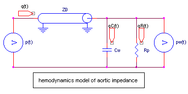
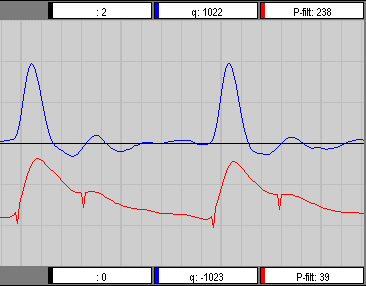
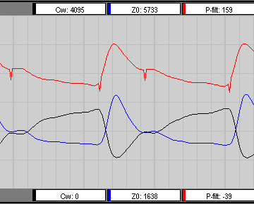
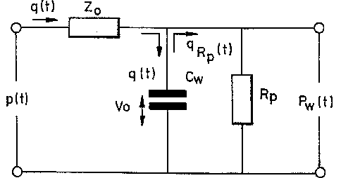

RF 2, Onset Systolische Bloeddruk
|
This functions calculates human hemodynamic parameters from arterial bloodpressure curve or from finger bloodpressure curve, the latter measured with a Finapres or Portapres system.
The gender and age of the person are required to perform the calculations of all the parameters. Length and weight of the person can improve the accuracy of the calculated parameters.
The following parameters are calculated:
|
Standard Parameters (beat to beat) |
Extended Parameters (beat to beat) |
Extended Parameters (continuously) |
|
Diastolic Pressure Mean Arterial Pressure Systolic Pressure Heart Rate |
Stroke Volume Cardiac Output Left Ventricular Ejection Time Total Pheripheral Resistance |
Aortic Pressure (filtered) Aortic Flow Aortic Characteristic Impedance Aortic Windkessel Compliance |
The beat to beat parameters are all available at every end-diastolic moment. At that moment also a so-called "valid" signal is true for just one sample, enabling other functions (i.e. averaging) to correctly interpretate the results.
This function in Midac can only be used after permission of ID-Spon.
|
Z0 = characteristic impedance of the aorta, symbolized by a transmission line, representing the inertia of the moving blood in the aorta and the compliance, both per unit of length Cw = windkessel compliance, representing the elastic properties of the aorta Rp = total pheripheral resistance, representing all the vasculair drainage beds |
 |
|
On the lefthand side of this schematic the pressure at the aortic valve (p(t)) as a driving force is shown. This model is nonlinear, because both Z0 and Cw depends on the pressure in the windkessel pw(t). Langewouters et al. [1] showed that the pressure-volume relation of the aorta follows an arctangent law, for which the parameters statistically depends on age, gender, length and weight of the person. From the pressure-volume relation it's possible to calculate the nonlinear Z0 and Cw as a function of the pressure. Because pheripheral resistance is assummed to be constant over one heart beat and only varies slowly in time, pheripheral resistance can be calculated from the stroke volume (SV) in the above model. Because systolic flow is not strong dependant on pheripheral resistance, an initial estimate of the pheripheral resistance will lead to a fast convergence. |
|
The algoritm consists of the following parts
Filtering 
Backtranformation to aortic pressure 
Detection of physiocal periods 
Determining end-diastole and end-systole
A fuzzy logic algoritm is used to determine the diastolic and systolic periods. Not only the raw pressure waveform is used, but also the results of the model-equations are used to check and/or correct the end-diastolic and end-systolic moments.
This algoritm is often used on pressure signals estimated by a PortaPres or FinaPres system. These measurement devices have to calibrate themselfs at regular time intervals (physiocal periods), leading to a missing bloodpressure signal. There is a special physiocal detector build in, which stops the calculations, stabilizing the current available values and waits until calibration is passed.
The equations of the model 
The model above is totally described by the next set of differential equations, which can easily be solved by a computer.
The flow through the aortic valve is determined by pressure difference (p-pw) over the characteristic impedance (Z0), divided by Z0 (whereby Z0 is dependant on the windkessel pressure pw).q(t) = (p(t) - pw(t)) / Z0(pw(t))The outflow from the aorta is determined by the windkessel pressure (pw) divided by the total pheripheral resistance (Rp).qR(t) = pw(t) / RpFor the change in windkessel volume (dVw / dt) yieldsdVw / dt = q(t) - pw(t) / RpFor the windkessel compliance yields (with Al=aortic length, p0 and p1 constants based on gender, age, length and weight, from Langewouters [1]) Cw(t) = (Al * Am * p1 / pi) / (sqr(p1) + sqr(pw(t) - p0));So for the actual characteristic impedance Z0 yields (with rho=density of blood, Al=aortic length)Z0(t) = Al * (sqrt(rho / Vw(t) * Cw(t)))In (semi-) steady state situations, the end-diastolic pressure equals both p(t) en pw(t).
Estimate of the total pheripheral resistance Rp 
Stroke volume (SV) is calculated by integrating the aortic flow (q(t)) during systole.
The pheripheral resistance is calculated by dividing the mean arterial pressure (MAP) by the total ejected volume per unit of time or the cardaic output (CO), which equals the stroke volume (SV) multiplied by the heart rate (HR)Rp = MAP / CO = MAP / (SV * HR)
Comparing Midac with Beatfast 
The same Valsalva manouvre is evaluated with both Midac and Beatfast.
The results are shown below. Beatfast is not able to display the vraiations of aortic flow, characteristic impedance and windkessel compliance during one heart beat, so here only the Midac results are shown.
|
One beat, Aortic Flow |
|
|
Midac |
Beatfast |
|
 |
not possible to view |
|
One beat, Aortic Characteristic Impedance and Compliance |
|
|
Midac |
Beatfast |
|
 |
not possible to view |
1) Langewouters GJ, Wesseling KH, Goedhard WJA,
The static elastic properties of 45 human thoracic and 20 abdominal aortas in vitro and the parameters of a new model.
J. Biomech 1984; 17:425-435
Voor de eerste simulaties wordt gebruik gemaakt van de opname
c:\d_midorg\mid-data\polygraf\autoneur\1011meh.?1
autonome neuropatie test, opgenomen op 2-10-1997 (staat bij Stef onder patient 001)
in de praktijk is een copy gemaakt onder 1011meh.4
De volgende tussen bestanden zijn aanwezig in de matlab en beatfast directory
001.b5 beatfast export, ruwe bloeddruk
001.t5 ASCII export, ruwe bloeddruk
001.rtf5 export file van beatfast in rtf format (op basis van ruwe bloeddruk)
001.b6 beatfast export, back-filtered bloeddruk
001.t6 ASCII export, back-filtered bloeddruk
001.rtf6 export file van beatfast in rtf format (op basis van back-filtered bloeddruk)
Deze bestanden bevatten een stukje bloeddruk opname, dat begint op ongeveer 20 seconden naa de aanvang van de opname en ongeveer 80 seconden duurt.
Back-filtering is gedaan met de formule uit patent US 5.400.793
yn = 0.077*xn + 1.484*yn-1 - 0.561*yn-1
In eerste instantie zijn de analyses in beatfast met de volgende instellingen gedaan
beatfast m50 h0 w0 mf100 very c:\beatfast\001.b5 ch1 fin1 mrk0 001.d5
printres m50 h0 w0 [001.d5 beat ab1 tsr ] 001.bf5
Allereerst maar eens die vreemde eenheid Mu opsporen (of staat dit voor measurement unit ?)
Rp = 0.06 * MAP / CO = 60 * MAP / (HR * vol) = [mmHg.sec/ml] = [Mu]
De factor 60 komt van het omzetten van minuten naar seconden, zie verder het bestand 001bf6.xls.
Uit dit bestand blijkt tevens dat Rp een laagdoorlaat filtering heeft ondergaan !!
Da0=23.6 mm volgens beatfast
Diameter=1.61*1000*SQRT((4/PI())/(Z0*Z0*Cw))
met Cw/60=C' Diameter=208*SQRT((4/PI())/(Z0*Z0*Cw/60))
1 dyne = 10-5 N
760 mmHg = 1.0 * 105 N/m2 (of 1.013 * 105 N/m2 )
1 mmHg = 132 N/m2 = 1316 dyne/ cm2
Rp
Pogingen Rp de volgende slag weer te gebruiken, neigen naar oscillaties
Z0
waarschijnlijk wordt niet Z0 maar Z0*dt uitgegeven.
dan varieert mijn waarde tussen 32 en 35 mMu en Beatfast rond de 64 mMu
factor 2 veschil dus
De door beatfast opgegeven waarde invullen in de formule, geeft een eind-diastolische druk van 153 mmHg, wat een onzin dus.
Cw
Cw varieert gedurende 1 slag van 0.305 tot 1.058 (laatste waarde is eind-diastole), dit zou 1.5 moeten zijn volgens beatfast De waarde van beatfast invullen in de formule, geeft een eind-disatolische waarde van 66 mmHg, i.p.v. de gemeten 80 mmHg)
Over een aantal hartslagen gekeken, lijkt de vorm van in ieder geval Z0 en Cw akkelig goed overeen te komen tussen beatfast en mijn programma.
onderstaande zijn middels printres omgezet in *.txt en samengevat in trends_beatfast.xls
m20 h0 w0 mf100 high 001.bf8 ch1 fin1 m20h0w0.dat (Da0=19.3)
m40 h0 w0 mf100 high 001.bf8 ch1 fin1 m40h0w0.dat (Da0=21.7)
m60 h0 w0 mf100 high 001.bf8 ch1 fin1 m60h0w0.dat (Da0=24.1)
m80 h0 w0 mf100 high 001.bf8 ch1 fin1 m80h0w0.dat (Da0=26.3)
f20 h0 w0 mf100 high 001.bf8 ch1 fin1 f20h0w0.dat (Da0=16.2)
f40 h0 w0 mf100 high 001.bf8 ch1 fin1 f40h0w0.dat (Da0=18.6)
f60 h0 w0 mf100 high 001.bf8 ch1 fin1 f60h0w0.dat (Da0=20.9)
f80 h0 w0 mf100 high 001.bf8 ch1 fin1 f80h0w0.dat (Da0=23.0)
m40 h0 w0 mf100 high 001.bf8 ch1 fin1 m40h0w0.dat (Da0=21.7)
m40 h170 w70 mf100 high 001.bf8 ch1 fin1 m40h3w1.dat (Da0=21.9)
m40 h180 w70 mf100 high 001.bf8 ch1 fin1 m40h1w1.dat (Da0=23.0)
m40 h190 w70 mf100 high 001.bf8 ch1 fin1 m40h2w1.dat (Da0=23.3)
m40 h0 w0 mf100 high 001.bf8 ch1 fin1 m40h0w0.dat (Da0=21.7)
m40 h180 w60 mf100 high 001.bf8 ch1 fin1 m40h1w3.dat (Da0=22.2)
m40 h180 w70 mf100 high 001.bf8 ch1 fin1 m40h1w1.dat (Da0=22.6)
m40 h180 w80 mf100 high 001.bf8 ch1 fin1 m40h1w2.dat (Da0=23.0)
|
WindKessel / ModelFlow Doorsnede van de aorta A(p) niet nodig A(p)=Am*[0.5+(1/pi)*arctg((p-p0)/p1)] Am is the maximum diameter at very high pressure Am(female)=4.12 Am(male)=5.62 p0(female)=72-0.89*age p0(male)=76-0.89*age p1=57-0.44*age C(p) =Am*p1 / (pi*( sqr(p1) + sqr(p-p0) )) Cw(p) = L*C(p) L = 60 cm (adults) Z0 = sqrt( rho / (A(p)*C(p))) rho = denstity of blood = 1.06 kg/dm3 Rp bepalen en gebruiken in volgende slag Rp=MAP/CO=MAP/(HR*SV) |
 |
|
|
|
ModelFlow
Gesampelde FinaPres Bloeddruk
De data dient juist geschaald, gesampeld op 100 Hz en in het juiste formaat weggeschreven te worden voor analyse met BeatFast.
Remove / Interprete FinaPres Calibration
Zogenaamde Physiocal faze, lit:
1) Wesseling KH, de Wit B, van der Hoeven GMA, van Goudoever J, Settels JJ. Physiocal, calibrating finger vascular physiology for Finapres. Homeostasis 1995;36:76-82.
2) Wesseling KH, Finger arterial pressure measurement with Finapres, Z.Kardiol 85: suppl3: 38-44 (1996), Steinkopff Verlag,
hierin wordt het volgende gezegd, het physiocal signaal doet een aantal stappen op en/of een aantal stappen neer, het signaal mag als betrouwbaar worden gekwalificeerd als er maximaal 2 stappen naar boven worden gedaan vanuit de uitgangs-situatie.
Volgens de handleiding van beatfast: it detects flat periods in the pressure signal, beginning at a level near mid-pressure, half way between systolic and diastolic pressure. Each flat level is counted as a beat and stored as an result.
Non Invasive Finger Arterial Pressure
Vergeleken met de aorta puls is deze golf vervormd.
According patent 5,400,793, Wesseling: "narrow band nature and its low-frequency resonance". A filter which corrects the mean resonance precisely up to a frequency of 8 Hz is necessairy (with a second or third-order filter). The following (second-order) IIR filter can be used:
yn = 0.077*xn + 1.484*yn-1 - 0.561*yn-1
Een ander stuk literatuur hierover, om de vingerdruk terug te vertalen naar de arm-druk, met voorbeelden,
Bos et al. Reconstruction of Brachial Artery Pressure from noninvasive finger pressure measurements, American Heart Associations, 1996
Aorta Pressure
Patent US 5,400,793 Wesseling, 1995, (from disk)
Method of determining the stroke volume and the cardiac output of the human heart
Basic calculation of stroke volume from FinaPres en PortaPres, both on arterial bloodpressure and finger bloodpressure, contains corrections for sex and age, no corrections of length and weight, finger pressure correction very summier.
Hemodynamics by bio-impedance measurement of total body, with only 2 or 4 electrodes
© Copyright Instrumentele Dienst, 1999
 SM, last updated 29-10-1999
SM, last updated 29-10-1999 
{kind=link}
{kind=link}
{kind=link}
{kind=link}
{kind=link}